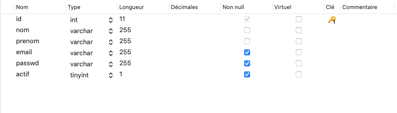

Après les notions théoriques sur les SGBD, nous allons à présent nous intéresser à certains concepts factuels qui sont utilisés dans la gestion des bases de données. Ainsi, que sur leur structures et les différents types de données qui peuvent être stockés dans une base de données.
Les bases de données relationnelles reposent sur plusieurs concepts fondamentaux qui permettent de structurer et d’organiser les données de manière efficace et cohérente. Comprendre ces concepts est essentiel pour tirer pleinement parti des capacités des SGBD relationnels.
Le schéma d’une base de données est une description formelle de la structure de la base de données. Il définit les tables, les colonnes, les clés primaires et étrangères, les contraintes d’intégrité, etc. Le schéma est généralement défini lors de la conception de la base de données et ne change pas fréquemment. Il sert de plan pour l’organisation des données et assure la cohérence et l’intégrité des informations stockées.
Les tables sont les structures de base dans une base de données relationnelle. Elles sont composées de lignes (ou enregistrements) et de colonnes (ou champs).
Chaque table représente une entité spécifique, par exemple, une table des utilisateurs peut contenir des informations sur les utilisateurs d’une application.
Voici un exemple de création d’une table en SQL pour stocker les informations des utilisateurs :
Dans cet exemple, la table utilisateurs a six colonnes : id, nom, prenom, email, passwd et actif. La colonne id est définie comme clé primaire, garantissant l’unicité de chaque enregistrement.

Les relations sont des liens entre les tables qui permettent de structurer les données de manière logique et de les interconnecter.
Les relations sont établies par l’utilisation de clés étrangères. Une clé étrangère dans une table est une colonne qui fait référence à la clé primaire d’une autre table.
Voici un exemple de relation entre deux tables :
Dans cet exemple, la colonne auteur de la table article est une clé étrangère qui référence la colonne id de la table user. Cela établit une relation entre les utilisateurs et leurs articles.
L’intégrité référentielle assure que les relations entre les tables restent cohérentes. Par exemple, un article ne peut pas être associée à un utilisateur qui n’existe pas dans la table user. Les SGBD relationnels utilisent des contraintes pour maintenir cette intégrité.
Les index sont des structures de données qui améliorent la vitesse d’exécution des requêtes sur une base de données. Ils sont créés sur une ou plusieurs colonnes d’une table et permettent un accès plus rapide aux données.
La modélisation des données est une étape importante dans la conception de bases de données relationnelles. Elle consiste à structurer et organiser les données de manière logique et cohérente afin de répondre efficacement aux besoins d’une application. Une bonne modélisation des données améliore la performance des requêtes, facilite la maintenance de la base de données et assure l’intégrité des données.
La modélisation des données repose sur plusieurs concepts fondamentaux :
Un diagramme entité-relation (ERD) est un outil visuel utilisé pour représenter les entités, leurs attributs et les relations entre elles. Il aide à conceptualiser et à planifier
la structure de la base de données avant sa mise en œuvre.
Exemple de Diagramme Entité-Relation :
Dans cet exemple, nous avons deux entités : user et article. La relation montre qu’un utilisateur peut écrire plusieurs articles.